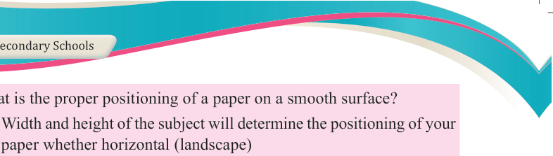
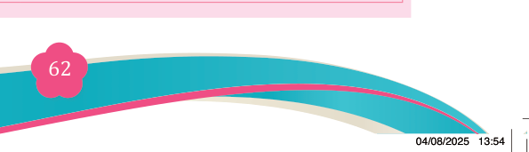

Fine Art for Secondary Schools

62

Student’s Book Form Two

(v) What is the proper positioning of a paper on a smooth surface?
(a) Width and height of the subject will determine the positioning of your

paper whether horizontal (landscape)
(b) Horizon and foreground will determine the positioning of your paper whether horizontal (landscape)
(c) Perspective and line quality will determine the positioning of your paper whether horizontal (landscape)
(d) Vanishing point and light will determine the positioning of your paper whether horizontal (landscape).
(vi) Which objects can be used in nature composition?
(a) Inanimate
(b) Abstract objects
(c) Animate
(d) Fluid objects
2. Describe any two principles of perspective.
3. Briefly describe the following concepts:
(i) Perspective
(ii) Proportion
(iii) Rule of the third
(iv) Inanimate objects
(v) Centre of interest
4. Match each item in column A against its corresponding item from column B.
Column A
Column B
i.
A viewfinder
A. A category of still life which applies
composition of unrelated objects.
ii.
The subject matter
B. A tool that enables artists to frame or
crop a particular scene to arrange their composition.
iii. Symbolic still life
C. The main idea that is to be communicated
in a still life.
iv. Types of still life composition
D. Manmade or natural objects.
v.
Still life composition
objects
E. Household pieces, flower or fruit pieces, animal pieces and symbolic still life.
F.
The objects must be in one size.
G. In sight size technique, a pencil, a painting brush.
04/08/2025 13:54